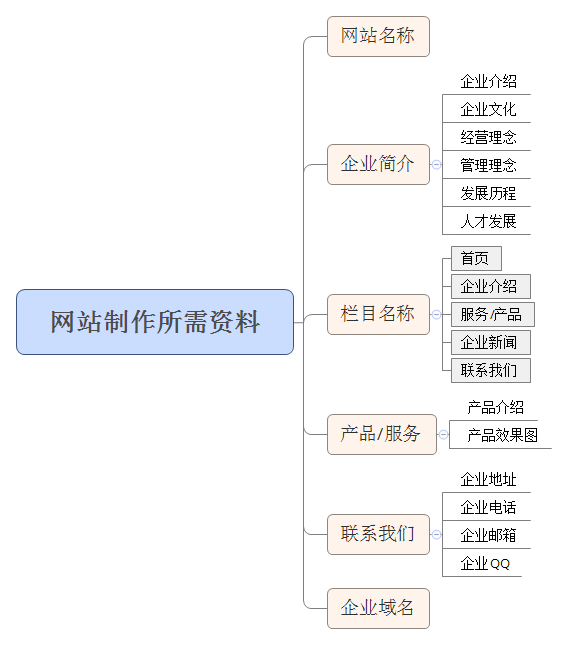

对于用户体验设计师来说，最令人失望的场景之一是，客户的团队需要花时间去思考问题，并在没有任何解释的情况下进行一系列的设计更改。
这一切似乎感觉都很好：你与客户进行了完美的沟通，收集并制定了项目交付的所有需求，并将你的时间投入到工作中。但有些事情出了差错，你的设计理念被拒绝了。
让我们找出客户不信任你的用户体验设计的原因，帮助你与客户建立持久的合作关系。
1. 你的客户没有参与到设计过程中
每个设计师都知道这一点，创建产品的过程需要花费时间和精力。然而，你的客户可能会有另一种看法。他们可能会想：打开Photoshop或Sketch有什么困难？这是用户体验设计师和客户之间沟通的一个常见的认识上错误。你的客户没有参与到设计过程中，所以他们不知道设计阶段需要做什么以及为什么要这样做。
为了解决这个问题，你可以考虑让你的客户参与到用户体验设计的过程中，以增加你的设计理念被理解的可能性。如果客户对所有设计阶段都很熟悉，他们会更清晰地意识到每个阶段对于设计优秀用户体验的好处。
通常，用户体验设计师将设计阶段分为几个阶段，包括需求收集、研究、低保真原型设计、高保真原型设计和用户研究。客户应该详细地了解这其中的每一个阶段，以协助你创建无缝的用户体验。
1）需求收集
在这个阶段，项目需求是由客户引出的。客户想要达到的目标是什么？客户的目标受众是谁？我们要构建什么特性？我们要求这些问题来规划项目，并建立我们客户的期望。
2）研究
这个阶段决定了产品在市场上的定位，并定义最终用户和他们的偏好。研究阶段帮助你定义你的工作范围，并优先考虑你的任务。
3）低保真原型
在这个阶段，低保真原型的好处是，你的客户在意识到工作还没有完成的时候，至少可以看到一个粗略的项目框架，也就是代表产品的草图。因此不会将低保真原型与成品联系起来。
4）高保真原型
通过与客户共享高质量的原型，你可以在产品实现之前验证你的设计思想。高保真原型可以帮助你和你的客户发现哪些想法是值得执行的，哪些不是，发现产品是否有价值，决定产品的用户友好性，等等。
5）可用性测试
即使不同的公司在不同的阶段实现了可用性测试，用户体验设计师们也知道，最好是消除低保真原型的测试，因为他们经常需要额外的说明。然而，测试高保真原型，精确地模仿你的最终产品，让所有的测试参与者都能正常工作，并允许你检测系统的缺陷，并在发布产品之前修复这些缺陷。
2. 你没有建立客户期望
在开发和设计网站时，你可以看到关于公司和设计机构的客户期望管理的详细手册。作为一个规则，建立客户期望是由项目经理、业务分析师或核心执行人员承担的，用户体验设计师不参与其中。那么，如果一个项目已经经过了需求收集阶段，客户的需求已经完成了，那么设计团队应该做些什么呢？
考虑向客户的团队解释为什么项目的每个阶段都很重要。
在设计的每个阶段与项目负责人进行协作，这样你就能够不断地获得关于设计的反馈。
与客户的目标协调你的用户体验策略和项目愿景。
当所有的涉众可用时，计划对更新和报告进行审查。
通过吸引目标受众的兴趣和特性的可行性来给出原型变更的理由。
调整优先级，讨论可能的风险与突然的原型变更或变更涉众的时间表。
3. 你忘记你的长处
用户体验设计师的工作超出了简单界面设计的范畴：你必须跟上最新的设计和市场趋势，成为一名“心理学家”，以了解用户的行为，并成为一名优秀的研究者。
用户体验设计师的一种常见的研究是用户体验竞争研究或者是以用户体验为焦点的研究。用户体验竞争研究的目的是评估竞争设计的优势和劣势，比如可用性和交互设计，并将它们与你自己的产品进行比较。
用户体验竞争研究的一个关键好处是，要弄清楚你的产品是否与你的竞争对手竞争，并产生新的想法来解决你当前的用户体验问题。
此外，以用户体验为重点的研究成果，例如电子表格，详细说明了竞争对手的用户体验模式的优缺点，可以作为项目的一个规范。
如果你决定不去考虑用户体验的竞争性研究，你的客户可能会失望。因为如果你不了解你的客户的业务和竞争对手，那么你可能无法达到你的客户目标。
如果你想通过全面的竞争分析来满足你的客户，下面的一些技巧将会很有用。
开始使用以用户体验为重点的研究
1）选择你的竞争对手
产品的优势在于它的新颖、独特性和简单性。选择那些产品与你的产品有着相同的价值和特性的竞争对手，这样你就能恰到好处地获得你的最终用户的期望。
2）选择评估的标准
选择能够帮助你实现适当评估的标准。你的客户的业务目标和问题应该以可度量的和明确的标准来反映。例如，对于一个电子商务网站，你可能会有以下的标准：“用户可以在愿望列表中添加项目吗？”或者“库存的功能是可用的吗？”
3）创建一个带有竞争对手的用户体验特征和模式的矩阵
将你对竞争对手的所有发现转化成一个有形的矩阵，揭示你对手产品的所有优点和缺点，并将它们与你自己的产品进行比较。
4. 你的原型是令人困惑的
在互联网上，有很多关于原型设计的文章。我就不在这里强调原型的重要性。所有的设计师都会意识到他们需要一个产品的草稿版本，如果一个设计方案不起作用，他们就可以修改或者干脆舍弃掉。
尽管原型的好处是显而易见的，但客户仍然面临着挑战，让你对原型进行解释。当你与你的设计紧密配合，保持你头脑中的每一个细节时，即使是一个小的更新也能让你的客户再次浏览所有的内容以获得正确的目标定义。这样的混淆常常成为新的变更的原因，因为客户对对象之间的交互没有清晰的理解。
对于围绕像博客文章或产品这样的对象的接口来说，这是一个常见的困境：在对象存在之前很难确定操作。与其直接用于流和交互，不如定义对象以及它们将与之关联的操作。
这种方法的专家称为OOUX：面向对象的用户体验设计。我要指出的是，这里的“面向对象”与在编程中的面向对象程式设计并不相同，尽管这些概念与通过对象的视角来看待系统有着相似的想法。OOUX意味着首先确定和设计对象，然后定义操作（比如登录、签出和搜索）。
与典型的以用户为中心设计的原型设计方法相比，OOUX为开发者、用户体验设计师和客户提供了一种通用语言，因为人们发现通过对象而不是动作来感知系统更容易。这种面向对象的用户体验方法可以帮助我们更快更好地阐述框架的结构。
5. 你的设计没有讲述一个故事
讲故事在公司的成功中扮演着重要的角色：由于故事的发展，公司能够向人们传达自己的价值主张，并与广大的受众进行互动。
许多领域的专业人士，包括营销人员、文案策划和网页设计师，都熟悉讲故事的概念。在用户体验设计中，这一概念相对较新的。一般来说，用户体验设计师有几种方法可以利用故事的力量：
作为一种营销和销售产品的方法。
作为用户体验设计中的一个框架（一种定义用户角色和他们的故事以获取最终用户信息的方法）。
作为一种从终端用户中建立情感反应的技术（在用户体验设计中，一个讲故事的结构，努力传达产品的感觉）。
在经典的叙事结构开始、铺垫和高潮中体现迷人的内容。
作为用户体验框架的讲故事并不能取代详细的交互设计。然而，故事可以帮助你反映你的概念和你的客户的想法之间的联系。故事可以在用户体验设计的不同阶段使用。
当你的客户和最终用户没有观察到制作用户角色和背景故事的过程时，他们能够理解故事是如何与产品建立联系的。长话短说，在用户体验设计中没有一个很好的描述，你的产品看起来就像一批典型的屏幕和正式的描述——这很可能会让你的客户感到不满意。
6. 你没有一个用户体验策略
为什么缺乏用户体验策略会成为客户对原型的不信任的原因呢？当下创建数字产品的方法应该基于真实的数据，而不是假设，以及对业务目标和用户需求的深刻理解。在屏幕上，模糊地反映真实用户的行为，结果会导致无休止的迭代设计变更，结果是不完整的产品。
用户体验策略结合了用户体验设计和商业策略的概念，为用户体验设计师提供了一个工具包，以创建与业务目标相一致的产品。用户体验战略包括设定未来用户体验的远景、确定目标的优先级，以及创建如何评估商业成功的模型。
用户体验设计师的目标是演示用户体验，并与所有项目的涉众分享设计人员所获得的知识。
实施用户体验策略可以考虑遵循以下几点：
概述业务目标，并将业务目标与用户体验设计相结合。
优先考虑业务目标。
为用户体验设计提供可度量的KPI。
为用户体验设计制定出详细的责任区域。
这里需要指出的是，用户体验策略会吸收本文中提到的所有内容：它涉及到客户的设计过程，并将业务目标与用户体验设计相结合。这是一种尝试，在原型阶段还能减轻混乱，并使用像讲故事这样的创新方法来加强与目标受众的互动。
结语
产品的成功很大程度上取决于用户体验设计的解决方案，但要向客户证明专注于用户的需求是必须的，这仍然是一个挑战。然而，熟能生巧。分析你与客户的沟通：决定什么对他们有效，什么不适合，看看他们对你的想法有何反应，以及如何促进合作。
正如你可能已经猜到的那样，用户体验设计师应该是具备同理心，能够理解他们的客户。所以，不要停止改进，最终你会让你的客户满意。

很多新站长不知道SEO要怎么去操作,甚至还有很多的新站长不知道SEO是什么。面临这样的问题新站长需要更多的时间去学习SEO,对于一个刚上线的新站我们要怎样做才能做到排名?以下几个简单的方法让新站长流量暴增。
第一、用户体验
一个网站的好坏全部在于用户体验，顾客觉得你这个网站信息够多、够相信、有价值百度自然会给你的网站加分。网站建设有很多需要注意的地方，比如网站关键词的布局设置,关键词的布局是一个网站最重要的一部分,当客户被百度或者其他搜索引擎带到你的网站后，网站响应的速度如果太慢或者网站界面排版不够清晰又或者不是客户喜欢的内容都会造成体验差的因素。做不好用户体验你的网站做的再好也没有用。用户体验我们可以从以下几个方法去分析：假设我们是做金融的那么我们就要通过这几个方面去思考。
一、满足用户借款 二、满足用户理财 三、满足用户问答 四、满足用户资讯 当你的网站做好用户体验我们就要深入其他方面。
第二、关键词的选择与布局
当你想好要做一个什么样的网站的时候你就要去分析关键词，根据关键的热进行标题的布局，假设你做的是一个普通话成绩查询网站我们可以这样去选择关键词，根据关键词的指数大小去选择第一个普通话成绩查询、普通话考试成绩查询、北京普通话成绩查询。我们通过目标关键词、长尾词、地区词来分布。
第三、高质量原创文章与外链
高质量原创文章：在做好SEO的基础后我们需要为我们的网站加一些高质量的文章，把网站页面做到丰富多彩多样的，具有较好的吸引力，最重要的是要持续不断的去更新高质量文章，这样才能使关键词遥遥领先排名。百度一再强调网站需要做好高质量文章，很多站长不会写文章可以去网上多看一些文章从中思考，一篇好的文章可以被很多媒体转载给网站增加外链以及权重。
外链：虽然讲百度已经拒绝外链了不再给外链带来权重，很多站长都会说那发外链已经是没有用了，如果你这样想那你就错了，百度拒绝的是垃圾外链高质量外链百度还是会给予权重，高质量的外链我们可以通过投稿、购买等方式获得。
第四、营销策略
如果你只是单纯的去做SEO而不懂什么是营销策略的话，很容易出现的情况是网站有排名了但是还是没有转化。解决的方法就是你要去多学习一些营销策略、运营等。比如两个同样的汉堡加盟店网站，人家的网站上有各种各样的汉堡而你的网站上面只有几个产品，那么顾客肯定不太喜欢。
总结：我们想要做好SEO靠网站来挣钱，你必须做好以上几点，做SEO的大神通常都是避免不了熬夜的，所以要想做好SEO就要做好长久站准备。

提到网站推广，大家可能习惯的想到搜索引挚推广等。其实推广的路子太多了， 下面我们简单的介绍几种初级的方式：
a) 搜索引挚推广(SEO)
这部分无须多说，需要注意的是在做SEO的时候不要过了，要是过了有可能您付出的代价就会很大。
b) 交换链接
适当换一些外链，不要挑外链太多的网站，
c) 加入行业网站联盟
这样做的好处：(1)增加在行业内的影响力(2)提高被搜索的概率 (3)与联盟成员互相链接。
d) QQ群宣传
这是一种已经被用烂的方法，不过比较有效，有兴趣的可以试一下，建立几十上百个以行业为关键词的QQ群，可以成功的圈起来一部分有效的行业用户。
e) 网络广告
假设贵公司有钱，当然是适当的投一些广告比较合适了，像百度的主题推广、GG的关键词广告以及其它一些包月的广告等。有时候大投入是会有大产出的。
f) 事件营销
这块有些难度，没有敏锐的洞察力估计是从这里找不到你想要的那个点的。
g) 线下活动推广
比如说行业峰会、评测会议等方式。也有一些网站搞团购等也不错!
h) 软文推广
这个方式个人认为挺好，就看你会不会写了。
i) 其它方式，不再一一列举!
网站推广的方式太多了，还是那句话，只有想不到，没有做不到 !以上就是杭州网站建设公司为您分享的。

企业网站建设，是一项非常浩大的工程，需要投入非常多的精力，包括了太多技术性的内容，如网页设计、图片、导航、网站建设程序、更新文章等等。这其中有用户看不到的过程，而最终真正摆在用户面前的，是一个已经完成的完整的网站，而我们需要关注的，就是用户能够看得到的内容，下面小编就来讲讲企业网站上有几大必不可少的要素，希望能对网站建设相关人员有所帮助。
1.企业介绍
企业网站最大的作用就是为了展示企业形象和产品，吸引客户，可以说，企业网站就是企业营销重要的一部分，所以企业介绍是非常有必要的。企业介绍可以包括企业现有的规模、企业特点、行业排名、市场份额、用户是如何评价企业的产品或服务的等。这样罗列一下，那每一个企业背后都会有许多资料可以展现，所以很多人都说我企业刚刚成立，没有什么资料可以放上去，只要掌握了这些小技巧，文案就可以信手拈来了，当然如果有条件的话还可以请文笔较好的人员来为企业撰写一下文稿。
2、产品展示
产品是每一个公司企业的命脉，而具有竞争力的产品是一个企业赖以生存的核心力量。随着互联网技术的发展，现已进入到新互联网经济时代，产品的利润也变得越来越透明，目前很多企业都在布局互联网渠道，网站建设也变更更加的重要，网站的功能从最初的信息展示转变成目前的营销功能，当然信息展示是营销的重要前提，想要营销做得好，首先就得保证信息展示的质量！
怎么做呢？产品展示中，图片一定要美观大方，尽可能高清展示，低像素的图片很可能会让用户联想到劣质、低廉等字眼；其次，文字信息也一定要表达清晰，既要能全面说明产品的信息特点，又要能引起用户的兴趣，注意，不要用一些固有文字套路来糊弄消费者，或许内容的创造可能会花很多的精力，但是要知道这是值得的；最后，产品的信息要不断更新，这种不断更新的态度会让用户的关注度提升，一方面通过这种坚持传递出的感情更能打动客户，另一方面也能让客户体会到企业的持续创造的能力。
3、企业服务
当前，传统的制造模式开始向以顾客为中心，企业相互提供生产性服务和服务性生产，在更紧密的分工和协作中为顾客提供“产品 + 服务”解决方案的服务型制造模式转变。在该模式下，服务与物理产品的地位同样重要，不再是物理产品的附属。当前很多企业都会忽视这一点，我想说，服务在企业营销中尤为重要，好的服务完全有可能是用户购买的原因，因此，在网站中也应该注意展示企业的服务水平。
4、联系方式
好的沟通是企业营销成功的重要一步，那如何创造一个好的沟通呢？前提是得有联系方式呀！在网络上要怎么找到一个企业？手机、电话、微信、邮箱、QQ等都是可以的，方法非常的多。不可否认的是，很多的人现在还是停留在传统的方式，喜欢线下谈买卖，但是在互联网的大环境下，我们当然可以把线上线下结合起来，网站作为新时代的营销渠道，企业既然进行互联网营销，就不应该放过任何一个让用户找到自己的机会。
所以企业一定要重视网站上的联系方式，在企业联系电话上最好是随带着位置地图，向客户传达“我是实体经营的，跑不掉的”这种信息，这样做能够更好的得到客户的信任。除了这些之外，只要是能联系上的方式都写上，现在微信不是非常流行吗？我们就可以在网站上放上企业公众号的二维码，让感兴趣的用户拿起手机扫一扫就能联系，方便快捷。还有其他的联系方式比如：QQ、邮箱、网址等等一个都不能落下，全部都要写到网站上面去，还是那句话，决不能放过任何一个让用户找到自己的机会！

现在市场上有很多专业的网站建设公司，在进行网站建设的时候需要请专业的网站建设公司才能够更好的建站。下面，专业网站建设公司壹个网络来为大家介绍一下需要注意哪些事项。
首先，网站建设的目的是使用更加的方便、各功能表现能力更加的强。网站用来浏览，浏览量越多就能够将网站知名度提升，同时也将网站的吸引力增强，这样就可以让潜在顾客转变为实际顾客，也能够让普通顾客转变成忠诚顾客。在网站建设的过程中，壹个网络确保能为用户提供更人性化的多功能界面。
其次是网站建设要有丰富的网站内容。网站的功能等同于宣传，网友点击的一定是被内容所吸引，肯定没有人愿意浏览千篇一律的网站，所以说，每天一定要给网站提供新鲜的主题和元素，进行内容的丰富，要在更新中积累更多的浏览者。这是网站建设的要点。
再次是隐私性。网站是公开化的，任何人都可以用各种方式进行阅读，这时候网站需要对注册客户的个人信息做好充分的保护工作。在互联网中，信息的交流非常的快捷，如果隐私泄露，那么就会全面的公开。所以网站建设公司在建设新网站的过程中，一定要做好安全环节。
第四是选择可信赖的网站，对于客户来说，直接的方法就是观察一家网站建设公司的官方网站，这是一种最直接的了解。假如网站建设公司连自己的网站都做的毫无特色，那么就可以知道这家公司的实力到底如何了。这类网站建设公司在市场上还是不少的，依靠各种忽悠手法和低价策略来骗取客户，最终的效果让人大失所望。
第五是查看优秀的案例，客户在面对一些北京网站建设公司不切实际的吹嘘，要进行能力的检验，除了看他们网站质量，还有就要研究这家公司的以往案例。案例的好坏可以从视觉设计、交互体验以及功能的实现去判断。当然一些公司也会存在冒用案例的现象，这个就难以辨别了，也能够用搜索引擎的搜索和询问服务商案例的出处来确定案例的真实性。
关于网站建设还有许多需要注意的地方，需要你在经营中不断挖掘和积累的。
网站所达到的基本作用，从三个方面加以概括：供、求、合。作为我个人来讲，完全同意网站建设的这个方向。应该朝着这个方向去走。但对于一个公司来讲，如何操作是个重点。以下仅是我个人的看法。
首先，网站的最基本作用就相当于公司在网络上的一张名片，他想要向网络提供什么资讯，即公司在建立网站的最初的目的在哪?一张名片它所能包含内容就是姓名、地址、联系电话、传真、e-mail、公司形象表识等等。所以公司网站的作用首先在于要让想找您的人找到您，所以网站中尽量多的包含有能够表述公司性质或产品性质的文字说明，文字要求有普遍意义。这样人们在搜寻查找时，网站很容易就被关联所引上。这张名片公司不一定就只放在自己的网站上，名片不是给一个人的，可以通过在其他的网页上发布一些小资讯来完成，但资讯中一定要带有让别人找到自己的方法。
其次，在让别人找到您之后，公司网站的另一个重要的特点就要求发挥作用了：宣传。您的网站想要向大家说点什么?或者采用更主动的办法就是：您想要大家做点什么?或者是您带领大家做点什么?这个方面的内容对于公司来讲目的性更强一点。在这个方面，大家更喜欢图文结合的方式来看您的公司介绍，这就是网页制作的问题了。在这里做宣传的有自己供给的产品或服务，还有包括您所要寻求的项目。
企业网站建立的主要目的：和老客户能够更方便的交流，甚至可以进行电子商务;让新客户能够了解您，至少能够下载公司的有关资料。
对于企业而言，如何抓住用户的心是重中之重，对于企业进行北京网站建设来言，那也是必不可少的，抓住了用户的心就能在市场竞争中脱颖而出，那么如何才能抓住用户的心呢?
首先，从竞争对手出发。
各行各业都有着无数的竞争对手，想要自己网站收获更好的排名，引进更大的客户量，首要了解竞争对手的推广模式，看看他的网站哪些地方博得搜索引擎的青睐，客户为什么选择了他。参考自己的网站，取其精华，补齐不足;懂得逆袭思维，制作一份更好的建站方案。
第二、域名的选择是不变的重点。
不管大家是要建设什么类型的企业网站，卖的产品又是什么，总是有一些通用的域名选择标准的。
一、选择的域名要是很容易就能记住的。如果你的网站域名过于复杂的话，用户是不会选择去记忆，而是采取收藏或者总是从搜索引擎处搜索进入的。这样的话是有可能流失掉一部分用户的。毕竟一旦用户通过搜索发现了更好的网站，那么你的网站绝对就会被抛弃掉了。
二、选择的域名要尽量带上关键词。想要重点推广某个产品或服务的话，大家就要在自己的域名内加入关键词，这样能够有效提高推广的效果。
三、选择的域名可以带上品牌词。如果企业开展外贸建站工作主要是为了推广自己的品牌的话，那么在域名中融入品牌词则是非常好的一种措施了。
第三、空间的选择依然是需要用心的地方。
如果空间不稳定的话，不管是网站页面的打开速度，还是网站的排名都会受到影响。就像是打游戏一样，如果在打BOSS的时候你总是掉线的话，相信是没有人会愿意和你组队的。同样的，空间不行的话，用户和蜘蛛也是不愿意光顾你的网站的。
第四，页面的设计依旧是需要灵感的。
一般来说，用户对某个网站的第一感觉决定了他要不要继续访问网站。因此，如果大家不重视其页面设计来的话，是会将很多用户给赶走的。这里需要注意的是，国外的网站风格和国内的网站通常都有比较大的区别。既然是做外贸网站，大家就要按照国外用户的喜好来设计网站。比如说，追求简洁大方，拒绝华丽浮艳等等。
很多的企业在准备要制作网站的时候都是急切的找到一家网站制作公司，但是找到网站制作公司之后，沟通起来却因为准备资料的不充分，导致工期的延误，网站也迟迟不能上线，那么做网站到底要准备些什么资料呢?下面壹个网络小编就为大家列出一个提纲，希望帮助到正准备要做网站的朋友。
1、网站名称
网站名称就是说我们要给我们要准备做的网站起一个名字。这个名称可以是我们的企业名称，也可以选用我们的产品或服务来命名，比如XX官网;XX服务网。如果我们准备要做的网站是以资讯为主，那名字方面可以是XX在线;XX资讯等。
2、企业简介
就是我们企业的简单介绍，以及发展历程，企业愿景，企业文化等，这些东西可以让网站制作公司来做，也可以让网站制作公司做好模板，我们完了自己添加。
3、栏目名称
我们在浏览网站的时候，都会看到大部分网站都会做出自己的栏目，一般的企业栏目设置有这些，企业介绍;企业服务/产品;企业新闻;人才招聘;联系我们等，我们企业可以根据自己的服务或者产品特色来制定出我们自己的栏目名称。
4、产品/服务
这里要给制作公司的是企业的一些服务项目后者产品类目，这里要包含产品的简要介绍，以及产品的特色或者效果，另外我们也要相对应的提供相关的图片，以便于网站制作公司根据产品图片及产品特色做出相对应的展示图，以便于用户浏览。
5、联系方式
预备要发布在网站上边的公司地址，公司电话，公司传真，电子邮箱，公司QQ等所有准备要发布在网站上边的联系方式。
6、公司的域名
就是我们公司经常浏览网站时候的XX.com;XX.cn,选择域名的时候，尽量选择我们企业的名称来选择，而且比较好记一点的，这样如果用户要找我们网站的时候，能直接输入我们的域名来找到，同样的也可以用我们企业的全称首字母，但是这些比较短的域名，经常是可遇而不可求的，而且是全球唯一的，所以如果别人注册之后，我们就注册不了了。
企业在制作网站的时候需要提供的素材大致就是这些，把这些素材先提供给网站制作公司，然后网站制作公司会根据提供的素材制作出相应的设计来，这样我们在看完设计出来的网站，如果有不合适再进行修改就好了，总之来说，好的沟通加好的设计才能帮助我们企业来搭建出一个完美的网站。

成功的网站有一个共同点：它们提供了一个简单但是能够给用户带来很好用户体验的网站。简单来说，一个成功的网站将让用户回来的次数更多。但是，一个好的网站的定义是难以捉摸的; 我们如何确保我们的网站设计更好，让用户更感兴趣?
重复的流量和客户忠诚度可以是您的业务的基石，因此您值得将以下内容整合到您的网站中。
用户体验
你第一次注意到一个网站，你第一次点击它?如果你像我们一样，你会被令人印象深刻的设计吹飞。一个漂亮的网站会让用户点击，并确保他们获得积极的体验，将使他们想要更多。
但伟大的UI不仅仅是美学。注意开发一个易于理解的直观网站是重要的-这一切都在更细的细节。
首先，想想你想要观众做的第一件事：购买物品?在线预订检查?打电话给您的手机安排修理?通过提供一系列清晰的步骤，使他们更容易做到这一点。
邮件营销活动
您的首页上的一个简单的电子邮件订阅表单可以实现许多功能，即使在您的用户离开您的网址后，您的品牌仍然保持着您的意识。从您最喜欢的博客文章，只能由订阅者访问的视频或独家折扣代码的每周总结，这些想法几乎是无止境的。当然，每个电子邮件都会丰富的链接指向到您的网站。
电子邮件收件箱最令人兴奋的事情之一是电子邮件广告系列。客户在首页上输入电子邮件后，系统会以设定的时间间隔向他们发送一系列预设的邮件。
您可以使用此功能为用户设置每天向他们发送食谱或强化您的销售渠道。例如，当他们注册时向他们发送欢迎电子邮件，几天后发送信息包，然后发送后续电子邮件，邀请他们提问。
当你希望他们收到它，要确保用户能够收到你的邮件
吸引用户的内容
客户回到您的网站的最大原因之一是您的网站内容。我们不是指关于页面复制-虽然这也必须要做的。但我们也要保证定期更新新的博客文章。
创造性思考。如果你是一个室内设计师，不要只是写关于油漆-也要涵盖室内设计趋势，家具和其他DIY提示和技巧。如果你卖办公室家具，写关于生产方面的知识。这是让您的潜在用户点击回到您的网站的一部分。
而且，将自己确立为这个领域值得信赖的领导者是用户购买前让他们信任的一种可靠的方法，并减轻他们可能感到的分心而带来的一些焦虑。

网站建设公司今天为您分析网站反馈的对于发展的重要性，一个好的网站不仅影响行业，而且影响企业和公众的问题。不断变化的网络社会催生了一个新的批评时代，因为公众现在只需点击一下就能向全球观众表达自己的观点。同样网络上的负面口碑带来的影响也是重大的，虽然也许最大的因果关系是我们的自我。在这个行业，我们与客户密切合作，而且试图更好的服务于客户。我们知道，当一个简短的宣传语在他们的屏幕上命中了客户的内心，我们认为这是营销的一种重要方式，可以适应所有的商业模式。
反馈有许多形式：在线审查，客户留言，你的老板的批评，一个同事的建议以及更多。无论形式如何，你必须是主观的。毕竟，并不是所有的反馈都是好的。但是，通过对所有反馈采取积极的方法，您也可以做大你最大的优势。企业做出的最大错误之一是，当实际上它是增长的机会时，将反馈视为完全负面的。
没有积极的反馈方法，我们的行业就不会进步。创新是因为我们知道它会完全停顿，坦率地说，负反馈只会继续存在。因此，在收到不良反馈后，给自己一些时间来处理信息，将自己与个人评论分离，并确定哪些评论(如果有的话)有价值。记住好或坏，然后反馈人们的信息。知道他们不喜欢什么样的说话方式，然后去改变他。
如何最好地挽救关系，在很大程度上取决于您的行业和您提供的服务。然而，可以全面采用的两个简单的策略是问责制和诚实。当你对反馈建议负责，并且诚实地对你如何计划纠正它，你将如何看到它不再发生，负责是这两个事情是任何健康的客户/客户关系的基础。
我们一直在思考一个问题，2017年的网站建设趋势是如何的。在今天的文章中，我们将把重点2016年的一些网站变化对2017带来的影响。从响应式设计到排版，讲述自己的品牌故事并于用户进行深度的沟通，成功利用最新趋势的品牌必将在世界上最大的市场上茁壮成长。
舒服的排版和可读性
一个网站舒服与否，从排版开始。在过去几十年里，排版已经发生了巨大的变化。排版一直是网站的关键元素，今年也是这样。那么，我们期待17年的排版能给我们带来不一样的感觉，有魅力的排版将发挥不可或缺的作用，能帮助您的品牌网站在竞争对手中脱颖而出。
首先，您的网站排版应以可读性和可看性衡量。然而，当你聚焦特定的词，句子或短语，为其创造可看性。例如，广告词，页面标题或副标题将为设计师提供了一种，利用强大的排版来吸引用户并突出特定文本的重要性。
在现实中，一些最有效的排版要求设计师回到基础。我们可以继续排版，最好相信我们可以，但最重要的事情，是突出你的品牌，这是你的网站排版最应该注意的。您的网站的排版应该是创意与其预期用途之间的平衡。
所有闪光的不都是金子
你根本不能通过效果和华丽的动画来传达一切。品牌突破设计，应从开始的内容和故事讲述钩住用户，然而，它不会需要游客长时间发现所有闪光点。那么，您的品牌如何去讲故事，以确保您的访问者继续回来，来让网站的受众群体继续增长?如果你还没有咨询一个有才华的内容营销专家，那么现在就去吧。
此外，通过为用户提供与网站进行互动的机会，可以提高网站的设计质量，从而成为故事过程中的一部分。高质量的内容和用户的参与是携手并进的，如果只能做到一点，那么你的网站肯定会受影响的。提供一个深思熟虑的、相关的品牌故事，并伴随互动视频、动画、在线问答，企业观点，你的网站不仅会钩住用户，还会让用户参与进来。注意用户在你网站的表现，在2017年用户参与的重要性将上升。
不只是有益的，而是必要的
当然，现在你已经听说过人们对移动响应网站制作的关注，那搜索引擎如何看待响应式网站以及来自移动设备的流量?所以，如果你是少数几个没有跳过移动潮流的品牌，为什么不在这方面也下点功夫呢?它不再只是有益的，而是必要的。
用户更有可能通过适合移动设备的网站进行购买，而不会从没有移动的网站购买。基本上，如果你的品牌网站不能与移动兼容，将失去很大一部分资源。因此，我们还应该提到，网站设计有关搜索引擎(如百度)的优化，看起来对移动设备友好的网站才是正确的，并能发挥网站的优势。我们讨厌成为坏消息的承载者，没有响应式的网站现在正在受到惩罚，更多的网站开始布局移动端了，你也应该开始了。
现代互联网技术正在突飞猛进的发展，这也推动着整个社会进入到了“互联网+”时代，大家对网络的依赖程度也正在不断的提高，客户对网络的使用要求也在不断的提高，除了对网站应有的功能、美观度有较高的要求之外，越来越多的用户对网站的吸引性和搜索引擎友好性等各个方面也都提出了更多更高的要求。结合现阶段杭州网站制作的市场发展状况来看，实际上能够发现网站制作的市场需求是非常广阔的，这也为广大的网站制作公司提供了更多的机会。专业杭州网站制作公司壹个网络就来为大家梳理一下，到底网站制作市场需求主要表现哪些方面吧。
首先，随着用户的要求的越来越高，也让越来越多的网站制作公司更加注重起网站的用户体验满意度，我们都知道，一个网站建设出来就是给客户们看的，网站的功能性和展示效果对于客户对公司产品的信任度会产生巨大的难以想象的影响力，因此我们说，北京网站制作的体验满意度是非常重要的。这也是所有的网站制作公司都需要充分关注的方面。只有不断的提升用户体验满意度，才能够真正的实现高品质建站。
其次，网站制作必须运用SEO优化技术，在如今的科技技术日新月异发展的今天，网站的功能已经不单单是用于展示信息了，已经慢慢逐渐演变成一个功能强大的交互平台了。所以说网站要想给客户带来比较好的体验满意度，那么就一定要采用一些较为先进的SEO优化技术，使建设好的网站能够被引擎快速的收录和推广，这样一来就能够起到事半功倍的效果。
第三，除了采用高新技术对网站建设进行优化以外，网站制作公司还指出，在网站的运营过程中一定要适当的采取一些措施进行网络营销推广，进而全面的提升网站的商业价值，也能够将网站的盈利能力大大提升。在网站的运营过程中，更要注意网站的日常维护，这通常就需要懂专业技术的专人来负责，日常做好对网站的内容、数据、安全性进行维护，并且能够充分的保证网站的活跃度。
以上就是关于网站制作市场需求分析，在了解需求的基础上，才能够更好的完成建站的工作。
在线沟通，请点我在线咨询
咨询热线：
15372435068
客服qq：
515227377